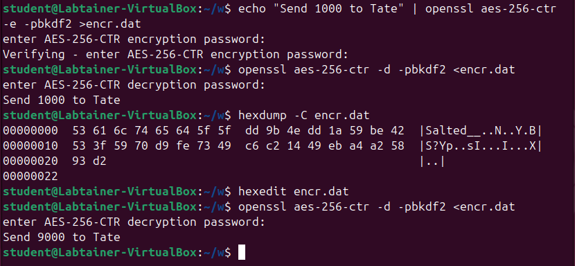

Joe Crypto always loved playing the “guess which hand is holding a prize” game, so proposes the following guessing game: You can give him two files, containing whatever data you want them to contain, but with the restriction that they must be the same length. He will then pick one of them, encrypt it with a secret key, and then give you the resulting ciphertext. You have to guess which file he encrypted! Joe’s crypto knowledge isn’t so great, however, and he uses AES in ECB mode. How can you play this game so that you can always win? Be very specific, including a clear explanation of why your strategy allows you to win. (Hint: What is the main weakness of ECB mode, and how can you create a file that displays this weakness?)
Solve “Question 3” from the Formal Models for Cryptography reading. Analyze the probability/advantage properly – don’t just handwave around an informal description! Is this a negligible probability or not? Justify your answer!
We discussed CTR mode in class with a diagram on the slides, and additional information (including formulas) is given at the end of Section 8.1 in the textbook. For this problem you are to show how CTR mode is malleable — remember from class that “malleable” means that an attacker can tamper with the ciphertext so that when the receiver decrypts the ciphertext there is some predictable change in the plaintext they recover.
You can do this entirely on paper, but it’s easy to make mistakes so I’d recommend that you experiment with your ideas in your Labtainer VM to make sure you have the right idea. To edit the ciphertext file, I use the hexedit program – this is not included in the Labtainer VM, but can easily be installed using the command “sudo apt install hexedit” (the password is password123). You should also brush up on basic exclusive-or properties that you learned in CSC 261.
The following screenshot shows tampering with a ciphertext to get a predictable result (a malleability attack):

Here’s what this shows: The message “Send 1000 to Tate” is encrypted using AES with a 256-bit key in CTR mode, with the ciphertext saved to file encr.dat. The next command shows the file being decrypted, giving back the original plaintext. The next command shows a hexdump of the ciphertext file, so you can see what it looks like. Then I ran hexedit to change the ciphertext file, and after that the modified ciphertext decrypts to say “Send 9000 to Tate.” I just gained $8000!
Explain how this attack works – use the CTR-mode formulas to show what happens when a ciphertext byte is modified in a certain way, so that it decrypts with a predictable change. Justify that this works using properties of exclusive-or (XOR). For instance, we know that XOR is associative (so \((x\oplus y)\oplus z=x\oplus (y\oplus z)\)), commutative (so \(x\oplus y=y\oplus x\)), zero is the identity element (so \(x\oplus 0=x\)), and every element is its own inverse (so \(x\oplus x=0\)).
Given the specific ciphertext shown in the screenshot above, which byte would you change, and to what, in order to get the results shown above.
Complete the “file-deletion” labtainer exercise, including the lab report (which is submitted as part of the labtainer .lab file – make sure you save your report before you run the stoplab command). This labtainer explores some of the concepts regarding file deletion that we discuss in the “Physical Security” lecture. Note that the files in these labtainers are not just plain ASCII files, which they probably should be. They have (non-ASCII) quotation marks, which don’t appear that way when you do a hexdump (which only shows ASCII characters). If I could change the lab, I would, but I don’t control that.